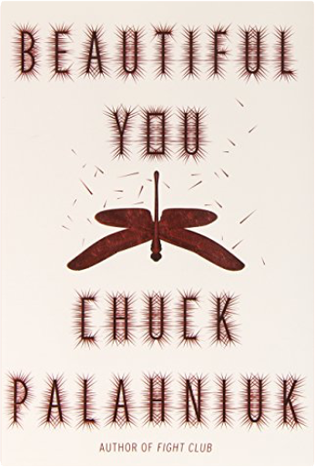
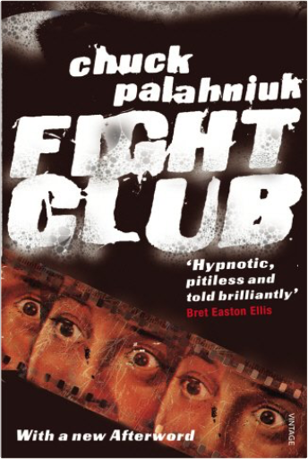
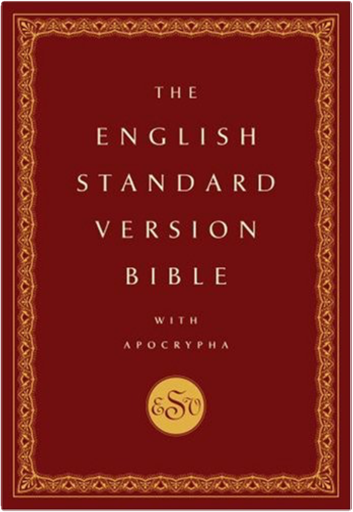
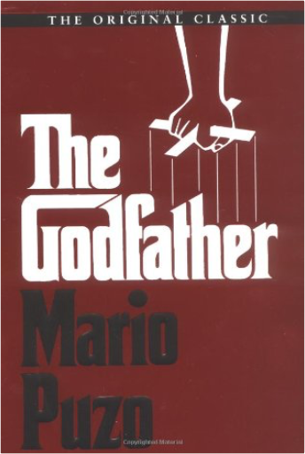
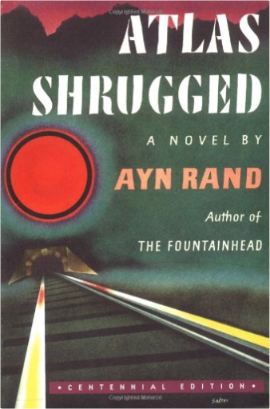

 Beautiful You: A NovelChuck Palahniuk "A billion husbands are about to be replaced."
From the author of Fight Club, the classic portrait of the damaged contemporary male psyche, now comes this novel about the apocalyptic marketing possibilities of a new product that gives new meaning to the term "self-help."
Penny Harrigan is a low-level associate in a big Manhattan law firm with an apartment in Queens and no love life at all. So it comes as a great shock when she finds herself invited to dinner by one C. Linus Maxwell, a software mega-billionaire and lover of the most gorgeous and accomplished women on earth. After dining at Manhattan's most exclusive restaurant, he whisks Penny off to a hotel suite in Paris, where he proceeds, notebook in hand, to bring her to previously undreamed-of heights of gratification for days on end. What's not to like? This: Penny discovers that she is a test subject for the final development of a line of feminine products to be marketed in a nationwide chain of boutiques called Beautiful You. So potent and effective are these devices that women by the millions line up outside the stores on opening day and then lock themselves in their room with them and stop coming out. Except for batteries. Maxwell's plan for battery-powered world domination must be stopped. But how?  Fight ClubChuck Palahniuk Every weekend, in basements and parking lots across the country, young men with good white-collar jobs and absent fathers take off their shoes and shirts and fight each other barehanded for as long as they have to. Then they go back to those jobs with blackened eyes and loosened teeth and the sense that they can handle anything. Fight Club is the invention of Tyler Durden, projectionist, waiter and dark, anarchic genius. And it's only the beginning of his plans for revenge on a world where cancer support groups have the corner on human warmth.  The English Standard Version Bible With ApocryphaOxford University Press The English Standard Version Bible captures as far as possible the precise wording of the original biblical text and the personal style of each Bible writer, while taking into account differences of grammar, syntax, and idiom between current literary English and the original languages. The ESV thus provides an accurate rendering of the original texts that is in readable, high quality English prose and poetry. This Bible has been growing in popularity among students in biblical studies, mainline Christian scholars and clergy, and Evangelical Christians of all denominations.
Along with that growth comes the need for the books of the Apocrypha to be included in ESV Bibles, both for denominations that use those books in liturgical readings and for students who need them for historical purposes. More Evangelicals are also beginning to be interested in the Apocrypha, even though they don't consider it God's Word. The English Standard Version Bible with the Apocrypha, for which the Apocrypha has been commissioned by Oxford University Press, employs the same methods and guidelines used by the original translators of the ESV, to produce for the first time an ESV Apocrypha. This will be the only ESV with Apocrypha available anywhere, and it includes all of the books and parts of books in the Protestant Apocrypha, the Catholic Old Testament, and the Old Testament as used in Orthodox Christian churches. It has a lovely pre-printed case binding, and includes a full-color map section, a table of weights and measures used in the Bible, and many other attractive features.
The English Standard Version Bible with Apocrypha is certain to become the preferred Bible in more conservative divinity schools and seminaries, where the Apocrypha is studied from an academic perspective. And it answers the need of conservative Christians in general for a more literal version of these books.  The GodfatherMario Puzo More than thirty years ago, a classic was born. A searing novel of the Mafia underworld, The Godfather introduced readers to the first family of American crime fiction, the Corleones, and the powerful legacy of tradition, blood, and honor that was passed on from father to son. With its themes of the seduction of power, the pitfalls of greed, and family allegiance, it resonated with millions of readers across the world—and became the definitive novel of the virile, violent subculture that remains steeped in intrigue, in controversy, and in our collective consciousness.  Atlas Shrugged:Ayn Rand This is the story of a man who said that he would stop the motor of the world—and did. Was he a destroyer or the greatest of liberators? Why did he have to fight his battle, not against his enemies, but against those who needed him most, and his hardest battle against the woman he loved? What is the world’s motor—and the motive power of every man? You will know the answer to these questions when you discover the reason behind the baffling events that play havoc with the lives of the characters in this story.
Tremendous in its scope, this novel presents an astounding panorama of human life—from the productive genius who becomes a worthless playboy—to the great steel industrialist who does not know that he is working for his own destruction—to the philosopher who becomes a pirate—to the composer who gives up his career on the night of his triumph—to the woman who runs a transcontinental railroad—to the lowest track worker in her Terminal tunnels.
You must be prepared, when you read this novel, to check every premise at the root of your convictions. This is a mystery story, not about the murder—and rebirth—of man’s spirit. It is a philosophical revolution, told in the form of an action thriller of violent events, a ruthlessly brilliant plot structure and an irresistible suspense. Do you say this is impossible? Well, that is the first of your premises to check.  Robert's Rules of Order Newly Revised In Brief, 2nd editionHenry M. III Robert, Daniel H. Honemann, Thomas J. Balch Robert's Rules of Order Newly Revised In Brief, 2nd editionHenry M. III Robert, Daniel H. Honemann, Thomas J. Balch Robert’s Rules of Order, Newly Revised, In Brief was first published in 2005 to meet the need for a simple and short book on parliamentary procedure. This second edition of In Brief is now updated and revised to match the new full edition of Robert’s Rules of Order, Newly Revised, also published this year.
Written by the same authorship team behind the officially sanctioned Robert’s Rules of Order, this concise, user-friendly edition takes readers through the rules most often needed at meetings—from debates to amendments to nominations. With sample dialogues and a guide to using the complete edition, Robert’s Rules of Order, Newly Revised, In Brief is the essential handbook for parliamentary proceedings.  The Price of Everything: A Parable of Possibility and ProsperityRussell Roberts The Price of Everything: A Parable of Possibility and ProsperityRussell Roberts Stanford University student and Cuban American tennis prodigy Ramon Fernandez is outraged when a nearby mega-store hikes its prices the night of an earthquake. He crosses paths with provost and economics professor Ruth Lieber when he plans a campus protest against the price-gouging retailer—which is also a major donor to the university. Ruth begins a dialogue with Ramon about prices, prosperity, and innovation and their role in our daily lives. Is Ruth trying to limit the damage from Ramon's protest? Or does she have something altogether different in mind?
As Ramon is thrust into the national spotlight by events beyond the Stanford campus, he learns there's more to price hikes than meets the eye, and he is forced to reconsider everything he thought he knew. What is the source of America's high standard of living? What drives entrepreneurs and innovation? What upholds the hidden order that allows us to choose our careers and pursue our passions with so little conflict? How does economic order emerge without anyone being in charge? Ruth gives Ramon and the reader a new appreciation for how our economy works and the wondrous role that the price of everything plays in everyday life.
The Price of Everything is a captivating story about economic growth and the unseen forces that create and sustain economic harmony all around us.  The Plot Against AmericaPhilip Roth The Plot Against AmericaPhilip Roth In an astonishing feat of empathy and narrative invention, our most ambitious novelist imagines an alternate version of American history.
In 1940 Charles A. Lindbergh, heroic aviator and rabid isolationist, is elected President. Shortly thereafter, he negotiates a cordial “understanding” with Adolf Hitler, while the new government embarks on a program of folksy anti-Semitism.
For one boy growing up in Newark, Lindbergh’s election is the first in a series of ruptures that threaten to destroy his small, safe corner of America–and with it, his mother, his father, and his older brother.  The Catcher in the RyeJ.D. Salinger The Catcher in the RyeJ.D. Salinger Anyone who has read J.D. Salinger's New Yorker stories ? particularly A Perfect Day for Bananafish, Uncle Wiggily in Connecticut, The Laughing Man, and For Esme ? With Love and Squalor, will not be surprised by the fact that his first novel is fully of children. The hero-narrator of THE CATCHER IN THE RYE is an ancient child of sixteen, a native New Yorker named Holden Caulfield. Through circumstances that tend to preclude adult, secondhand description, he leaves his prep school in Pennsylvania and goes underground in New York City for three days. The boy himself is at once too simple and too complex for us to make any final comment about him or his story. Perhaps the safest thing we can say about Holden is that he was born in the world not just strongly attracted to beauty but, almost, hopelessly impaled on it. There are many voices in this novel: children's voices, adult voices, underground voices-but Holden's voice is the most eloquent of all. Transcending his own vernacular, yet remaining marvelously faithful to it, he issues a perfectly articulated cry of mixed pain and pleasure. However, like most lovers and clowns and poets of the higher orders, he keeps most of the pain to, and for, himself. The pleasure he gives away, or sets aside, with all his heart. It is there for the reader who can handle it to keep.  The Taming of the ShrewWilliam Shakespeare The Taming of the ShrewWilliam Shakespeare Folger Shakespeare Library
The world's leading center for Shakespeare studies
Each edition includes:
• Freshly edited text based on the best early printed version of the play
• Full explanatory notes conveniently placed on pages facing the text of the play
• Scene-by-scene plot summaries
• A key to famous lines and phrases
• An introduction to reading Shakespeare's language
• An essay by an outstanding scholar providing a modern perspective on the play
• Illustrations from the Folger Shakespeare Library's vast holdings of rare books
Essay by Karen Newman
The Folger Shakespeare Library in Washington, D.C., is home to the world's largest collection of Shakespeare's printed works, and a magnet for Shakespeare scholars from around the globe. In addition to exhibitions open to the public throughout the year, the Folger offers a full calendar of performances and programs.  The TempestWilliam Shakespeare, Barbara A. Mowat, Paul Werstine The TempestWilliam Shakespeare, Barbara A. Mowat, Paul Werstine Each edition includes:
• Freshly edited text based on the best early printed version of the play
• Full explanatory notes conveniently placed on pages facing the text of the play
• Scene-by-scene plot summaries
• A key to famous lines and phrases
• An introduction to reading Shakespeare's language
• An essay by an outstanding scholar providing a modern perspective on the play
• Illustrations from the Folger Shakespeare Library's vast holdings of rare books
Essay by Barbara A. Mowat
The Folger Shakespeare Library in Washington, D.C., is home to the world's largest collection of Shakespeare's printed works, and a magnet for Shakespeare scholars from around the globe. In addition to exhibitions open to the public throughout the year, the Folger offers a full calendar of performances and programs. For more information, visit www.folger.edu. |

 Made with Delicious Library
Made with Delicious Library